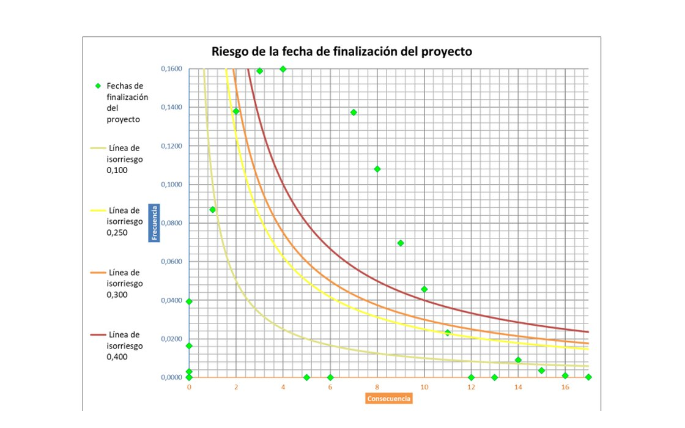

OPERATIONS RESEARCH · PROJET EN ÉQUIPE · 2024
Extension de la capacité de production d’une cave viticole
Planification d’un projet d’extension de capacité avec analyse des ressources, du chemin critique, de l’accélération et des risques.
MS ProjectGanttPERT/CPMMonte Carlo

PRÉSENTATION DU PROJET
Planification et maîtrise des risques
Structuration des activités, ressources et délais pour l’installation de dix cuves de fermentation dans un projet d’extension.
Analyse du chemin critique, équilibrage des ressources, accélération du calendrier et simulations Monte Carlo pour éclairer la décision.
EXTRAITS DU RAPPORT
Planning, coûts et risques
Figures issues du rapport original. Cliquer pour agrandir.